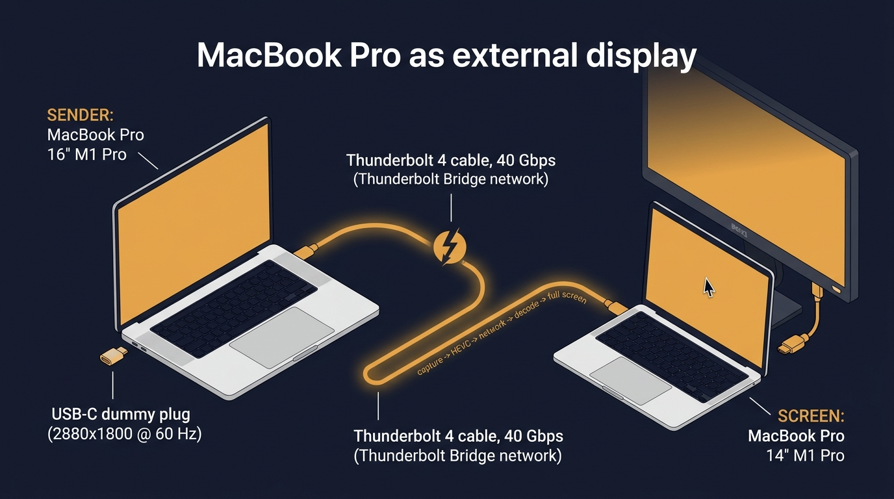
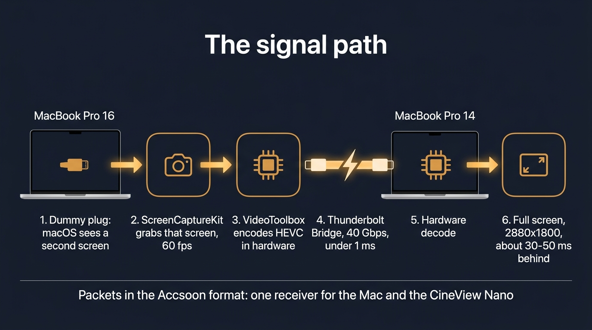
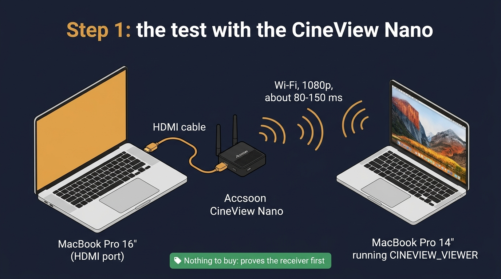

MacBook Pro as external display
The 16-inch MacBook Pro gets a second screen: the 14-inch MacBook Pro beside it. One USB-C dummy plug makes macOS see a real second monitor. One Thunderbolt cable carries its picture across, and a Swift app shows it full screen.

1Shopping list
Checked on amazon.de on 21.10.2026: the resolution tables on the product pages, the prices and the stock. Prices change, so each link shows today's price.

USB-C dummy display plug (EDID emulator)
Goes into a USB-C port on the 16-inch. Its table lists 2880 × 1800 @ 60 Hz and 2560 × 1600 @ 60 Hz. Both are 16:10, the same shape as the 14-inch screen under its notch (3024 × 1890), so there are no black bars.

Cable Matters Thunderbolt 4 cable, 0.8 m, Intel-certified
40 Gbps. Plugged between the two Macs, it becomes the Thunderbolt Bridge, a private network with almost no delay. It must be a Thunderbolt cable: a USB-C charging cable makes no network.

USB4 40 Gbps cable, 0.8 m, USB-IF certified
Instead of the Cable Matters cable. USB4 at 40 Gbps carries Thunderbolt between Apple-silicon Macs, but it has no Intel certification. If the bridge does not appear, this is the first suspect.

BENFEI USB-C to HDMI adapter, 4K60
Not needed for the plan. It is only for keeping the Nano plugged in when the 16-inch's own HDMI port is busy.
2Which port gets what
The 16-inch and the 14-inch, each seen from both sides.
3The signal path
From the dummy plug's screen on the 16-inch to the full screen on the 14-inch. All of it is in Swift.

4Step 1 needs nothing new: the CineView Nano
Before anything is bought, the Nano you own plays the dummy plug. The 16-inch's HDMI goes into the Nano, and CINEVIEW_VIEWER on the 14-inch shows the picture over the Nano's Wi-Fi. This proves the receiver first.

5The holes, and how each is closed
6The order of work
- The Nano testThe 16-inch HDMI goes to the Nano, and CINEVIEW_VIEWER runs on the 14-inch. Nothing to buy.
- Buy the two partsThe dummy plug and the Thunderbolt 4 cable, from the shopping list.
- Mantra Display sender v1On the 16-inch: grab the dummy's screen, encode it in hardware and send it in the Accsoon format over the cable. The receiver is CINEVIEW_VIEWER.
- v2 and laterv2: the full native size in HEVC. v3: the 14-inch's keyboard and trackpad drive the 16-inch. v4: Wi-Fi instead of the cable.